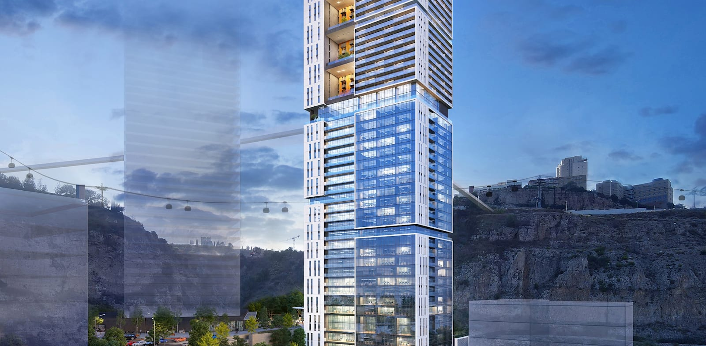

המתחם מקושר לגשר המוביל לטכניון ונמצא כ 12 דק' נסיעה מאוניברסיטת חיפה. פארק התעשייה המטרופוליני הזה, המתחבר באופן ישיר עם תוכנית המתאר הכוללנית של העיר נשר, עתיד לשלב מגורים (מעונות סטודנטים וסגל אקדמי ודיור מוגן), תעסוקה ומסחר; ופיתוח של מתחם מגורים (2,000 יחידות דיור) תעסוקה (80,000 מ"ר) ופארק ענק ב"מתחם כלל" ששיטחו 2,500 דונם, הכולל גם את המחצבה שנמצאת מול האתר ההיסטורי של בית החרושת נשר